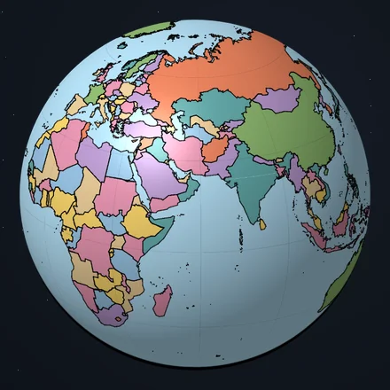
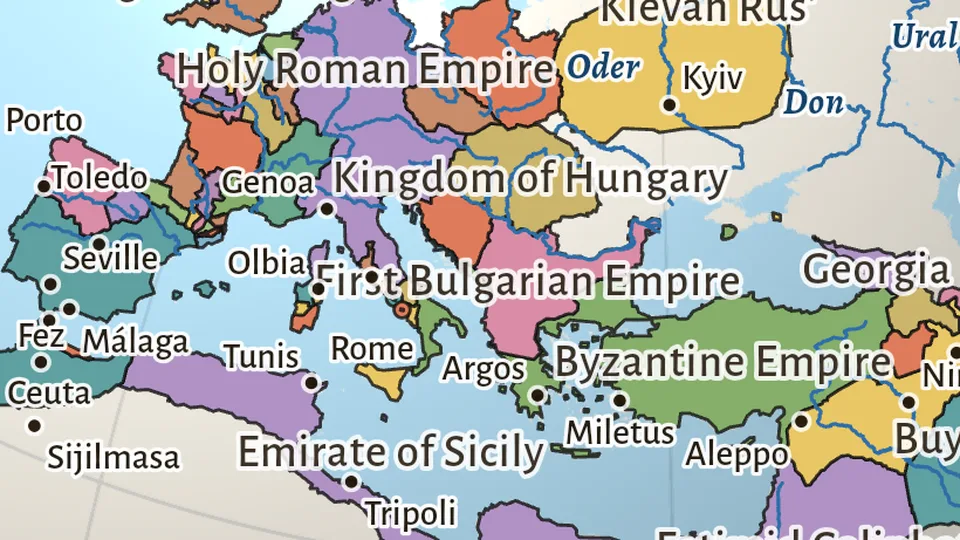
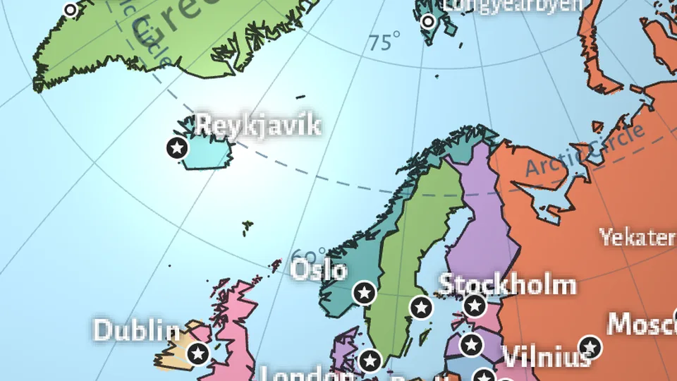
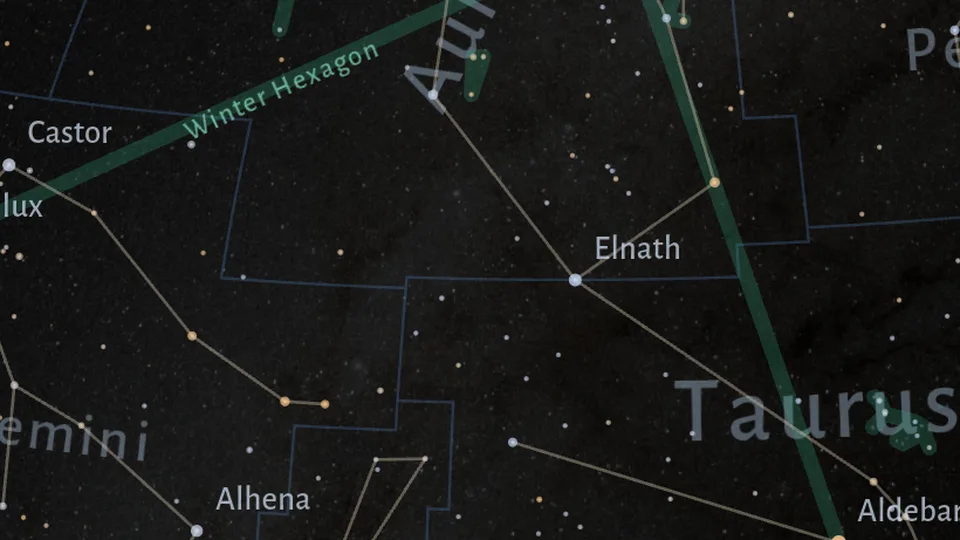
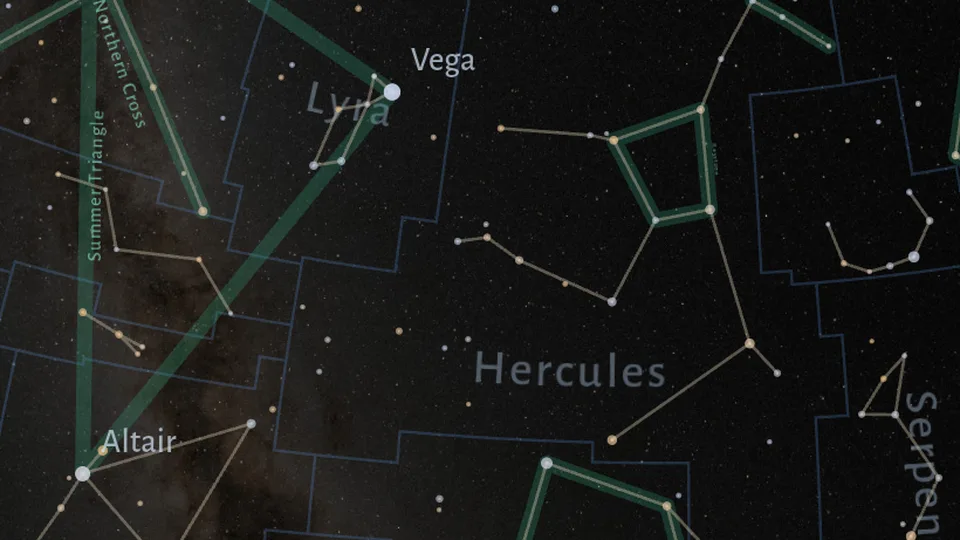
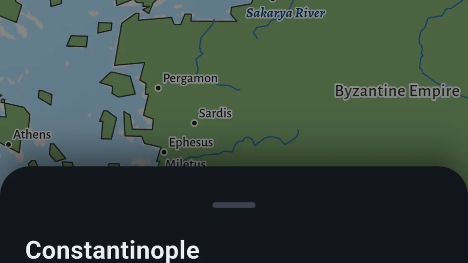

Notes from building a globe
I make Terrella, a 3D globe app. Here: how each screen works, how the maps are made, and the data behind them.

Cartography

Day 2 — Lines: eight thousand years of borders
A short clip scrolling from 3000 BC to today, and where those lines come from.

How the globe puts labels on a sphere
Curved names, which label wins a collision, and staying readable while the globe turns.

The star globe: reading the sky from the inside
Constellations, their borders and figures, and the asterisms drawn underneath.

Where Live Earth gets its data
Public sources, one small server, and why the app never asks them directly.

The historical globe, year by year
Scrubbing through time, what the dashed borders mean, and where coverage thins out.
Colouring a political map so neighbours never match
Graph colouring on real borders, and the few countries that make it hard.
A globe in a fragment shader
Why there is no 3D engine in the app, and what a sphere costs per frame.